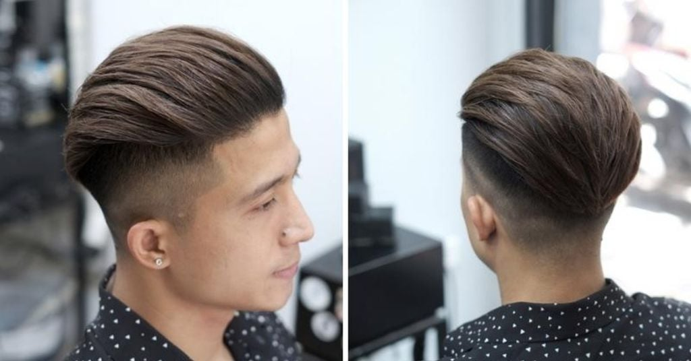
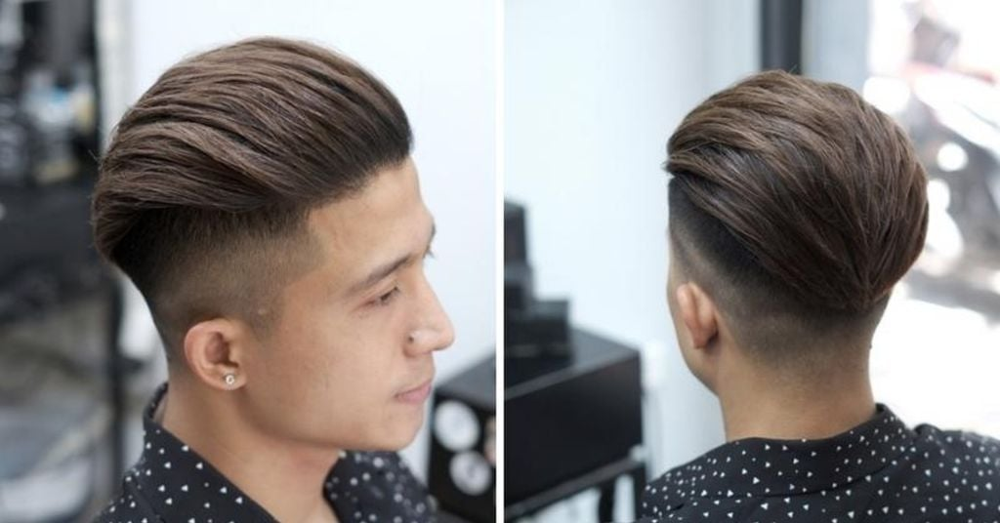
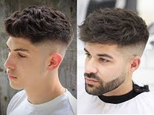
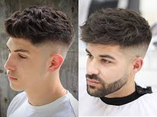
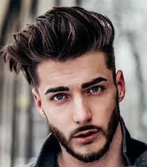
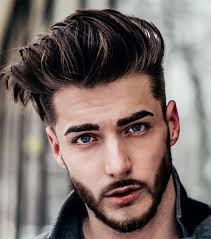

üíà Undercut Style

The Undercut has been one of the most popular men's hairstyles for over a decade. Featuring shaved sides and a longer top, it creates a strong contrast that adds sharpness and masculinity to your look.
✨ Special point: The Undercut looks
smart and elegant for work yet cool and edgy for
casual outings — truly a “2-in-1” hairstyle.
üî• Key Advantages
- Gives a youthful and masculine appearance.
- Easy to restyle in many variations.
- Fits most Asian face shapes.
- Low maintenance – trim every 3–4 weeks.
üìå Popular Variations
- Slicked Back Undercut: Gentleman and classy vibe.
- Side Part Undercut: 7/3 or 6/4 split, perfect for office style.
- Mohican Undercut: Short sides, raised fringe, youthful and energetic.
üí° Styling & Care Tips
Use hair wax or pomade to keep your Undercut in shape. Dry your hair, use a comb to set form, then apply wax for longer hold.
üëâ Tip: Use a round brush with a hairdryer for a naturally
voluminous look.
üì∏ Undercut Gallery

 

üëâ Want to try it now? Visit Thai Barber - 627 Giai Phong, Truong Thi Ward, Ninh Binh!


 



 
